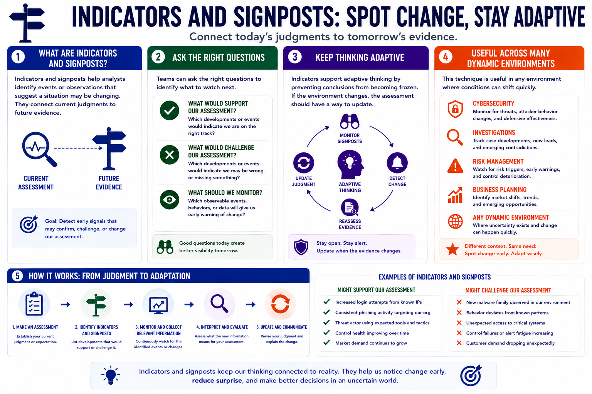

Structured Analytic Techniques
Indicators and Signposts
Connecting to LMS... Progress: in progress
Version 1.0 | Date: 2026-06-16 | Educational overview of structured analytic techniques for judgment under uncertainty.

Narration
Indicators and signposts help analysts identify events or observations that suggest a situation may be changing. They connect current judgments to future evidence.
Teams can ask what developments would support the assessment, what developments would challenge it, and which observable events should be monitored.
Indicators support adaptive thinking by preventing conclusions from becoming frozen. If the environment changes, the assessment should have a way to update.
This technique is useful in cybersecurity, investigations, risk management, business planning, and any environment where conditions can shift quickly.